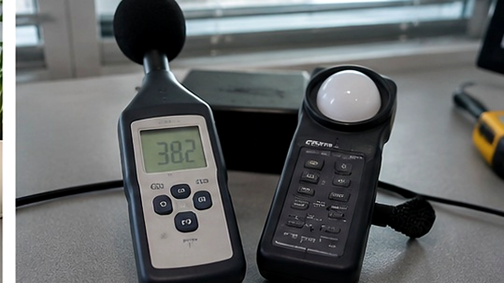

Как часто измерять шум, вибрацию, освещённость и микроклимат на рабочих местах

Наниматель обязан контролировать физические факторы производственной среды. Требования к такому контролю установлены Специфическими санитарно-эпидемиологическими требованиями к условиям труда работающих, утверждёнными постановлением Совета Министров Республики Беларусь от 01.02.2020 № 66.
Периодичность лабораторного контроля
- Шум, вибрация, освещённость — 1 раз в 2 года, если превышений гигиенических нормативов не выявлено; при выявленных превышениях — ежегодно.
- Микроклимат — 2 раза в год: в холодный и в тёплый периоды.
- Внеплановый контроль — в течение 6 месяцев после реконструкции, замены оборудования или изменения технологического процесса.
Аттестация рабочих мест — отдельная процедура
Аттестацию рабочих мест по условиям труда проводят не реже одного раза в 5 лет, а внеочередную — при замене оборудования, изменении технологии и в других установленных случаях. Инструментальные измерения факторов при аттестации выполняет испытательная лаборатория.
Протоколы измерений хранятся у нанимателя и предъявляются при проверках органов государственного санитарного надзора.
Подробнее об услуге